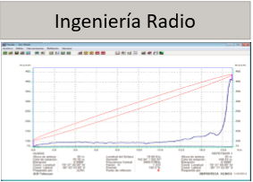
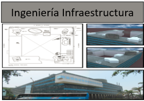
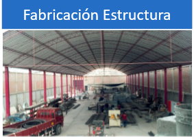
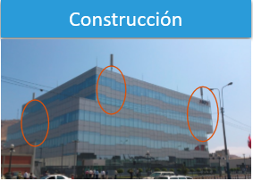
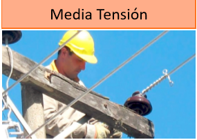
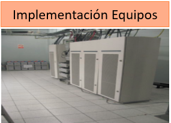
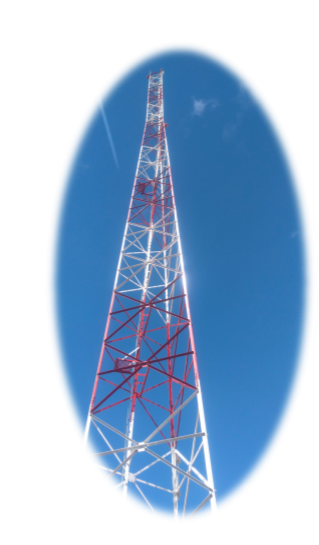

Quienes Somos
1Cultura Organizacional
ICK9 (DISYCON) nació en el año 2012, con el objetivo de entregar servicios y suministros de equipos a sus clientes creando lasos de confianza con sus colaboradores. Cuenta con profesionales de alta calidad entregando un trato directo y personalizado a cada uno de sus cliente. La experiencia de sus profesionales en la matriz nos permite administrar con vocación y liderazgo los proyectos, fomentando una visión empresarial a nuestro personal.
Nuestros Servicios






Actividad de la Empresa
